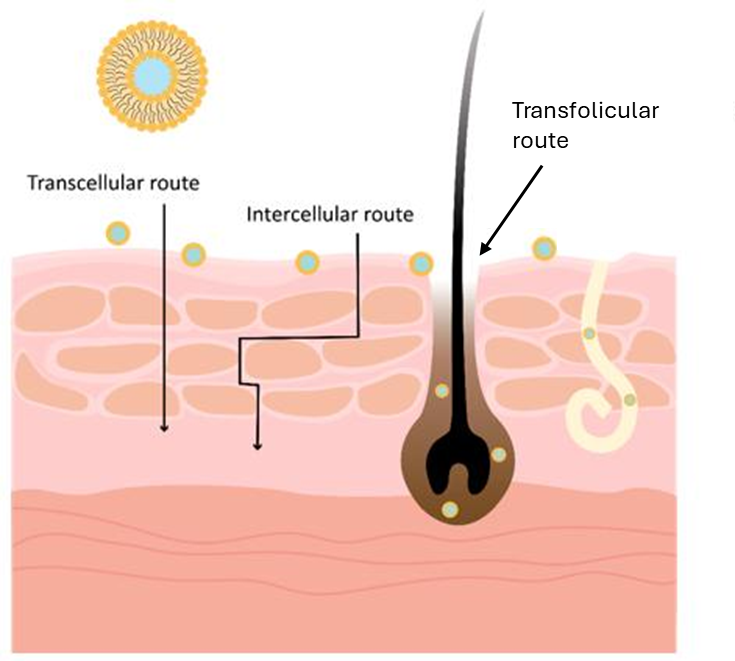
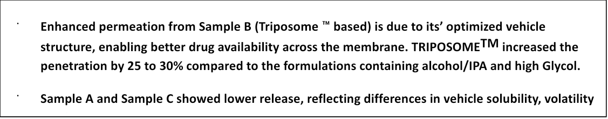
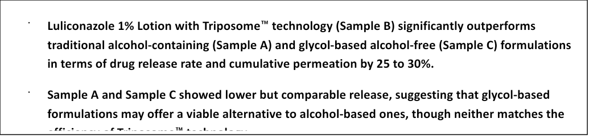
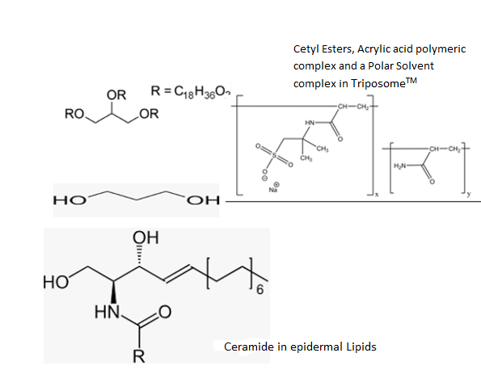
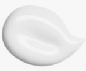
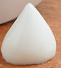

◉
Molecular architecture
A tri-layer carrier modelled on a natural cell membrane, with outer, structural and inner regions described in the technical brief.
DEVELOPED BY PROCRAFT INNOVATIONS
A distinct approach to dermal formulation
Triposome™ is a dermal delivery technology developed for pharmaceutical and cosmetic formulations intended for skin and scalp applications.
THE PLATFORM
A technology platform developed at the intersection of formulation science and dermal delivery.
Triposome™ is described in the supplied technical material as a stable mixture of cetyl esters and polar solvent(s) complexed with acrylamide copolymer. It is intended for use in suitable pharmaceutical, cosmetic and related formulations for skin and scalp applications.
Its performance depends on the active ingredient, finished formulation, manufacturing process and conditions of use. Each application should be evaluated in the context of its own development and testing programme.
*Values reproduced from the supplied Triposome™ user guide. Confirm against the current approved technical specification before commercial or manufacturing use.
A PROCRAFT INNOVATIONS PLATFORM
The supplied technical brief describes Triposome™ through four formulation principles. The technology is presented here as a platform concept; specific performance claims require supporting test data.
A tri-layer carrier modelled on a natural cell membrane, with outer, structural and inner regions described in the technical brief.
The source describes carrier sizing, zeta-potential calibration and receptor-mediated surface recognition as proposed targeting mechanisms.
An antioxidant interface, buffered microenvironment and compartmentalisation are described as design features for sensitive ingredients.
The brief describes an initial release phase followed by diffusion and a protected release phase.

Illustrative diagram reproduced from the supplied technical material. It should not be interpreted as a measured particle image.
About safety: No formulation can responsibly be described as having “zero side effects.” Safety and tolerability must be assessed for each finished product, ingredient combination, route and intended user population.
THE SKIN INTERFACE
The source document describes how formulation components may interact with the epidermal barrier and follicular pathway. These explanations are technical concepts, not a substitute for product-specific evidence.

SKIN PENETRATION PATHWAYS · SOURCE DIAGRAMThe supplied material discusses similarities between epidermal lipids and components of the Triposome™ system as a rationale for interaction with the stratum corneum.
The document describes the fluid phase and formulation rheology as factors that may influence absorption and the movement of permeants.
For scalp formulations, the source describes a possible role for sebum affinity and movement along the hair follicle pathway.

SCALP APPLICATIONS
A pathway discussed in the supplied technical document for scalp-oriented formulations.
PRODUCT CATEGORIES
The categories below organise the product concepts listed in the supplied portfolio. Visuals are illustrative packaging mock-ups, not approved commercial packs.
Product concepts and strengths are reproduced from the supplied portfolio. They are not an offer for sale or confirmation of regulatory approval, availability, clinical efficacy or suitability. Refer to the approved product label and applicable professional guidance.
SOURCE-REPORTED INFORMATION
Summaries below are transcribed from the provided Triposome™ document. The underlying protocols, raw data and independent reports were not supplied for verification.

TOPICAL SOLUTION
The source compares an alcohol-containing formulation, a Triposome™ formulation and an alcohol-free formulation with a high glycol content.
Source-reported figure; not independently validated in the materials provided.

TOPICAL LOTION
The source compares a Triposome™-based lotion with alcohol-containing and high-glycol formulations.
The repeated 25–30% figure has been retained as supplied and requires confirmation by the study owner.

HAIR SERUM
The source describes a hair serum concept involving plant stem cells and lists areas of investigation:
No numerical results or study report were included in the supplied document.
TECHNICAL OVERVIEW
The following information is reproduced from the supplied user guide. Confirm the current controlled document and validate process suitability before manufacturing.
TRIPOSOME™ SPECIFICATION
PROCESS OUTLINE IN SOURCE
Prepare the oil phase, aqueous phase and main manufacturing vessel.
Add oil-phase ingredients, including Triposome™, and heat to 65–75°C under stirring until a clear liquid forms.
Heat aqueous-phase ingredients to 65–75°C under stirring until a clear solution forms.
Combine both phases at 65–75°C for 1–1.5 hours under stirring and homogenisation. Additional surfactant may be required for stabilisation.
Cool to 30–35°C under slow stirring.
Apply vacuum to remove entrapped air bubbles from the bulk.
MULTI-FORMAT APPLICATION
FROM THE SUPPLIED DOCUMENT
Selected technical illustrations and formulation textures from the source material.





Source images are illustrative. Obtain approval and confirm usage rights before publication.
TECHNICAL DOCUMENTATION
The website brief lists a Material Safety Data Sheet (MSDS / SDS) as a resource. The SDS file was not included in the materials supplied for this build.
PROCRAFT INNOVATIONS
For information about Triposome™ technology, formulation development or collaboration, contact ProCraft Innovations through its company website.
Visit ProCraft Innovations Official email address, telephone number and company logo can be added when supplied and approved.